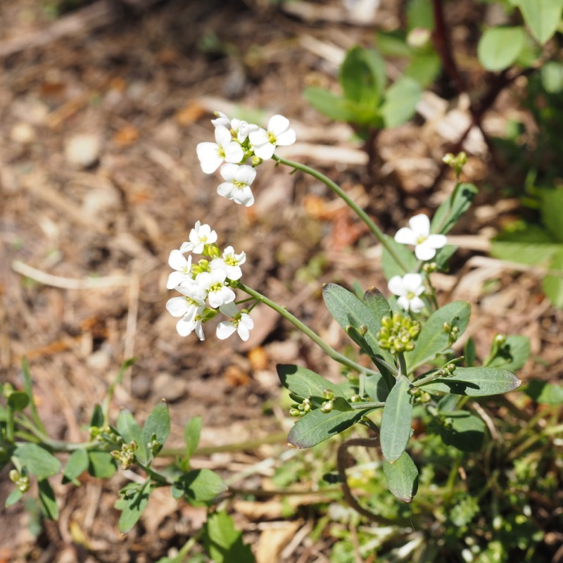
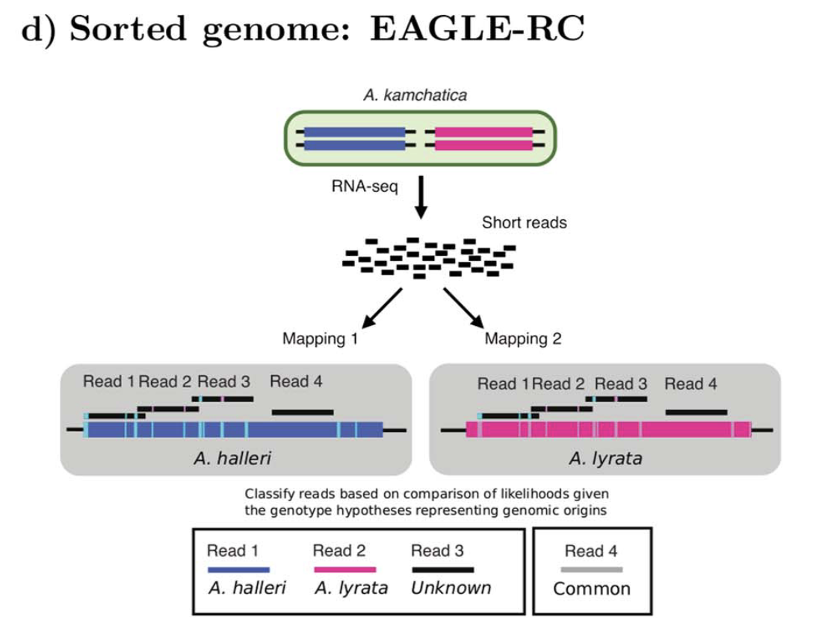
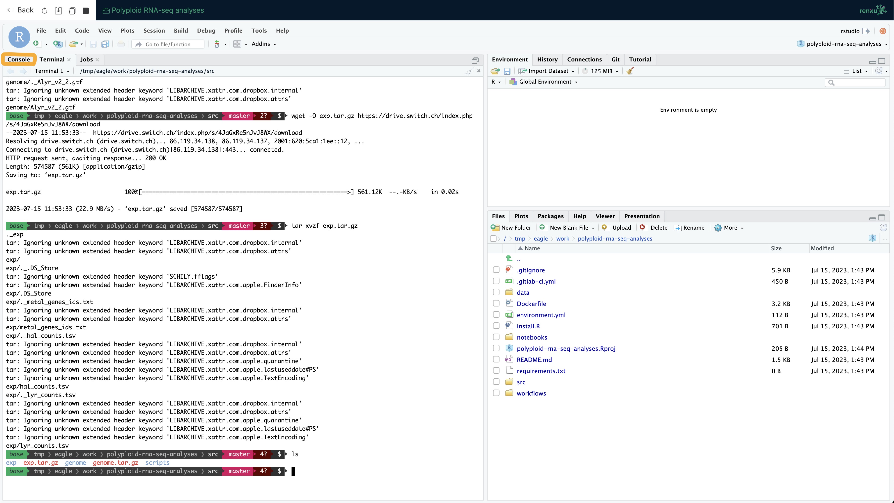
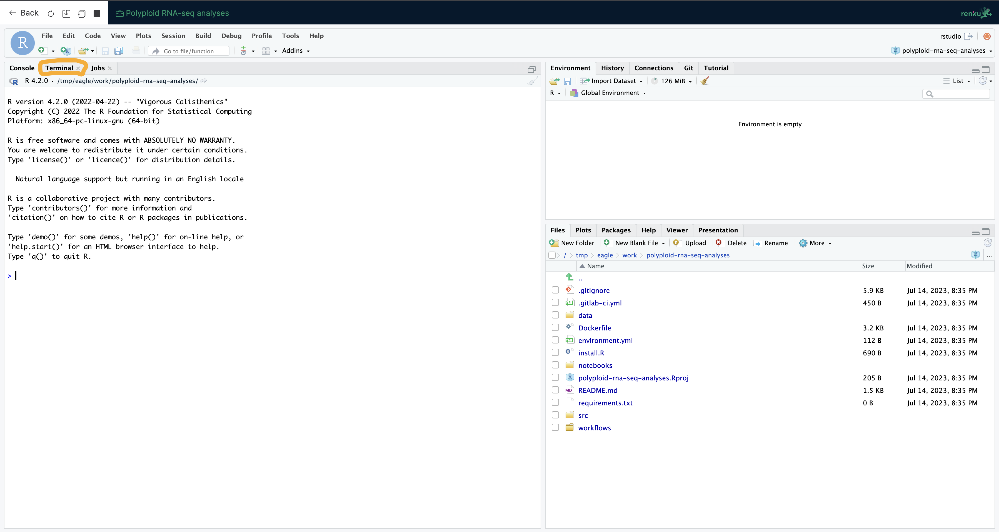

https://github.com/MoekoOkada/SummerSchool_2023
! When you copy the scripts, please copy from the GitHub page, not from this HTML file!
KK Shimizu (2022) Curr. Opin. Plant Biol.
Arabidopsis kamchatica

$ mean commands you use.
$.$.
cd command$ mean standard output on the terminal.Error messages may appear during extraction, but just ignore them!
src $ wget -O fastq.tar.gz https://drive.switch.ch/index.php/s/0ny11xweoA5WhEX/download
src $ ls
fastq.tar.gz genome genome.tar.gz scripts
src $ tar xvzf fastq.tar.gz
src $ ls
fastq fastq.tar.gz genome genome.tar.gz scripts
src $ ls fastq
MUR_1_R1_ds.fastq.gz MUR_3_R1_ds.fastq.gz MUR_R48h_2_R1_ds.fastq.gz trimmomatic_adapters.txt
MUR_2_R1_ds.fastq.gz MUR_R48h_1_R1_ds.fastq.gz MUR_R48h_3_R1_ds.fastq.gz
src $Trimmomatic (Bolger et al. Bioinformatics 2014.)
Use shell script 1_qc.sh to run Trimmomatics for all data.
#!/bin/sh
# 1_qc.sh
# Project: SummerSchool
# Date: 4-Jul-2023
# Author: Moeko Okada
mkdir 1_qc
cd fastq/
for i in `ls *_R1_ds.fastq.gz`; do
f=`basename ${i} _R1_ds.fastq.gz`
echo "# start ${f} " $(date)
trimmomatic SE -phred33 -threads 2 \
${i} ../1_qc/${f}_ds_clean.fastq.gz \
ILLUMINACLIP:trimmomatic_adapters.txt:2:30:10 \
SLIDINGWINDOW:4:30 MINLEN:40
echo "# done ${f} " $(date)
doneMake sure you are in the src directory.
You will get 4 .fastq.gz files in src/1_qc
For read classification by EAGLE-RC, reads should be mapped to each subgenome respectively.

STAR is recommended to EAGLE-RC.
But today we will use HISAT2 because of the time and resource limitations.
samtools (Li et al. Bioinfirmatics 2008.)
Use shell script 2_map.sh to run Trimmomatics for all data.
#!/bin/sh
# 2_map.sh
# Project: SummerSchool
# Date: 4-Jul-2023
# Author: Moeko Okada
mkdir 2_map
cd 1_qc/
for i in `ls *_ds_clean.fastq.gz`; do
f=`basename ${i} _clean.fastq.gz`
echo "# start ${f} " $(date)
hisat2 -p 2 -x ../genome/Ahal_v2_2 -U ${i} | samtools view -SbF4 -q 40 - | samtools sort -m 8G -@ 2 -o ../2_map/${f}_hal.bam
hisat2 -p 2 -x ../genome/Alyr_v2_2 -U ${i} | samtools view -SbF4 -q 40 - | samtools sort -m 8G -@ 2 -o ../2_map/${f}_lyr.bam
samtools index ../2_map/${f}_hal.bam
samtools index ../2_map/${f}_lyr.bam
echo "# done ${f} " $(date)
doneMake sure you are in the src directory.
You will get 4 .bam and 4 .bam.bai files in src/2_map
EAGLE-RC (Kuo et al. Brief. Bioinfom 2020)
Today, we will use NGI mode.
Please take a look github page for
You may be required to install some software.
Use shell script 3_eagle.sh to run Trimmomatics for all data.
#!/bin/sh
# 3_eagle.sh
# Project: SummerSchool
# Date: 4-Jul-2023
# Author: Moeko Okada
mkdir 3_eagle
cd 2_map/
for i in `ls *_hal.bam`; do
f=`basename ${i} _hal.bam`
echo "# start ${f} " $(date)
eagle-rc --ngi --ref1=../genome/Ahal_v2_2.fa --ref2=../genome/Alyr_v2_2.fa --bam1=../2_map/${i} --bam2=../2_map/${f}_lyr.bam -o ../3_eagle/${f}.eaglerc > ../3_eagle/${f}.eaglerc.stdout.log 2> ../3_eagle/${f}.eaglerc.errout.log
echo "# done ${f} " $(date)
doneMake sure you are in the src directory!
To make it faster and simpler, we will use *.eaglerc1.ref.bam and *.eaglerc1.alt.bam.
featureCounts (Liao et al. Bioinformatics 2014.)
Use shell script 4_count.sh to run Trimmomatics for all data.
#!/bin/sh
# 4_count.sh
# Project: SummerSchool
# Date: 4-Jul-2023
# Author: Moeko Okada
mkdir 4_count
cd 3_eagle/
for i in `ls *.eaglerc1.ref.bam`; do
f=`basename ${i} .eaglerc1.ref.bam`
echo "# start ${f} " $(date)
featureCounts -T 2 -t exon -g transcript_id -a ../genome/Ahal_v2_2.gtf -o ../4_count/${f}_hal_counts.txt ${i}
featureCounts -T 2 -t exon -g transcript_id -a ../genome/Alyr_v2_2.gtf -o ../4_count/${f}_lyr_counts.txt ${f}.eaglerc2.ref.bam
echo "# done ${f} " $(date)
doneMake sure you are in the “src” directory.
For further expression analysis, prepare a count matrix that looks like this.
| gene_id | MUR_1 | MUR_2 | MUR_3 | MUR_1_48h | MUR_2_48h | MUR_3_48h |
|---|---|---|---|---|---|---|
| gene1 | 10 | 8 | 11 | 58 | 62 | 65 |
| gene2 | 0 | 0 | 0 | 0 | 0 | 0 |
| gene3 | 100 | 103 | 99 | 5 | 2 | 6 |
Make sure you are in the 4_count directory!
src $ cd 4_count
4_count $ (echo "gene_id";ls *_hal_counts.txt; ) | sed -e s/_hal_counts.txt//g | tr '\n' '_hal\t' | sed 's/\s*$//' > hal_counts.tsv
4_count $ (echo "gene_id";ls *_lyr_counts.txt; ) | sed -e s/_ds_lyr_counts.txt//g | tr '\n' '_lyr\t' | sed 's/\s*$//' > lyr_counts.tsv
4_count $ echo "" >> hal_counts.tsv
4_count $ echo "" >> lyr_counts.tsv
4_count $ python /tmp/eagle/scripts/tablize.py -skip 1 -a -i 0 -c 6 *_hal_counts.txt >> hal_counts.tsv
4_count $ python /tmp/eagle/scripts/tablize.py -skip 1 -a -i 0 -c 6 *_lyr_counts.txt >> lyr_counts.tsv
4_count $Use R for calculation and visualization.
Please move to the R console.
Required package information is written in install.R.
## load count data
# set working directory
setwd("src/exp")
# load count data of halleri side
hal_count <- read.table("hal_counts.tsv", header = T, row.names = 1, sep = "\t")
# check hal count data
head(hal_count)
# load count data of lyrata side
lyr_count <- read.table("lyr_counts.tsv", header = T, row.names = 1, sep = "\t")
# check lyr count data
head(lyr_count)# bind count data
count <- cbind(hal_count, lyr_count) # cbind merges the two data frame based on rownames
# check data
head(count)
# load gene length of hal
Ahal_gtf <- read.table("../genome/Ahal_v2_2.gtf", header = F, sep = "\t")
Ahal_gtf <- filter(Ahal_gtf, V3 == "transcript") # extract transcript information
len <- Ahal_gtf$V5 - Ahal_gtf$V4 + 1 # define length based on start and end position of each gene
# Calculate RPKM
rpkm <- as.data.frame(rpkm(count, len, log = FALSE)) # rpkm function in DESeq2 package
table_rpkm <- as.data.frame(rpkm, n = nrow(count)) # convert to table
head(table_rpkm)
write.table(table_rpkm, file = paste0("homoeolog_RPKM.txt"), col.names = T, row.names = T, sep = "\t") # OutputMake a count matrix for each condition (control and zinc) for expression analysis
Use edgeR to compare halleri side and kamchatica side under zinc treatment.
# set groups
group <- factor(c("kam_hal", "kam_hal", "kam_hal", "kam_lyr", "kam_lyr", "kam_lyr"))
design <- model.matrix(~group)
# DEG detection from zinc-treated samples
d1 <- DGEList(counts = zinc, group = group)
# normalize according to UserGuide
d1 <- calcNormFactors(d1)
d1 <- estimateDisp(d1, design)
# plot Multi-dimensional scaling
plotMDS(d1)Use the heatmap.2 function in the gplot package.
How about the expression patterns of metal-related genes in control samples?
Compare expression between control and zinc condition for halleri and lyrata side, respectively.
!! Go back to terminal!
scripts directory.scripts directory.$ cd src/scripts
scripts $ R --vanilla --slave --args ../exp/pval.txt ../exp/homoeolog_RPKM.txt label.txt < calcpval_one.RThis process takes a while… How about a coffee break?
Make sure you are in the exp directory!
Make sure you are in the exp directory!
Now you got two pdf files.